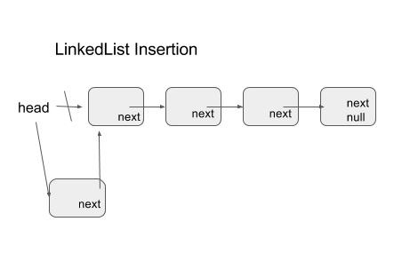
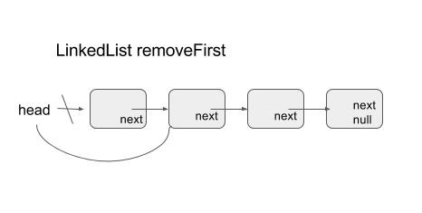
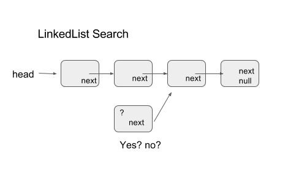
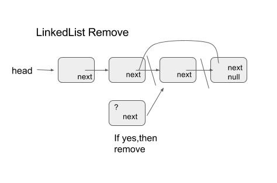

LinkedList
Abstract
LinkedList - it is a linked list.
Introduction
链表 （ linkedlist） 是常见的数据结构之一。顾名思义，链表由一个一个的节点链接而成。每一个节点，都包含了承载的数据，以及一个指向下一个节点的指针。我们可以通过想象力来帮助我们理解这个数据结构是如何构成的。
想象一下儿时玩过的藏宝游戏。你的父亲给了你一张小纸条，上面写了一个地址 - 也许是卧室的窗台上，也许是长廊的过道边 - ， 游戏就由此开始了。 你来到了纸条上描述的位置，发现了一块美味的糖果，和另一张写着其他地址的纸条，于是你吃掉了糖果，向着下一个目的地出发。每个目的地都有一些宝藏，也许是糖果，也许是玩具，最重要的是都会有一张写着地址的小纸条。 你可以一直找寻下去，直到有一天，你抵达了这条链的终点，那里不再有写着地址的纸条，只有父亲在微笑的看着你。
这就是一条典型的链表，每个藏着宝藏的地点就是链表的一个节点，写着地址的纸条则成为了指向下一个节点的指针。一个有限长度的链表必然存在着头和尾，在上文的例子中，第一张纸条可以被看做链表头，而没有纸条的最后一个藏宝点则是链表尾。
Methodology
这篇博文将用Java来一步一步实现一个拥有基本功能的链表来帮助读者理解这个结构。
首先，我们先为藏宝点建立格式
这样，一个简单的节点就建立起来了。treasure 可以是任何类型的元素，可以是其他object，也可以是数字或者字符串， 而next则指向了Node这个类。在实例中，next将会指向其他的Node实例。
有了藏宝的点，我们现在需要建立我们的第一张写着地址的小纸条了，这个纸条将会成为链表的头，所有的操作都将会通过这个小纸条来进行，它将是我们唯一的接入点。
这个LinkedList类，就是我们的链表，而类元素root，则成为了我们可以接入这条链表的接入点。
现在我们有了一个框架，那么是时候为这条链表增加一些方法了。
Implementation
从上文的例子和部分实现中，我们已经对链表有了一个抽象的认识。那么链表的操作该如何完成呢？
下面我们来一步一步的增加增删改查这些常用的方法。
Insert
最简单的插入方式，就是从头部插入新的节点。假设目前你手里握着第一张纸条，那么增加一个新的藏宝点到这个长链中的最简单的的方式则是建立一个新的藏宝点，把你手中的纸条藏在哪里，然后拿出一张新的纸条，记录下来这个新的藏宝点的地址。 这个操作完成之后，新的节点会成为链表的头，而原先的链表头则成为了链中的第二个节点。

LinkedList insertion operation chart 1.
上图解释了插入的过程。基本上可以分为两步：
- 新建一个Node，这个Node的next指向原本的root节点。
- 断开原本的头部，指向新建的节点。
这样，一个节点的插入操作就完成了。我们来看一下代码
注意这个if条件是因为当这个链表为空的时候，这个root是null值，没有next元素，所以只需要让root指向新建的节点就可以了。当链表已经有了至少一个元素的时候，我们才需要断开root -> node，然后新节点的next指向node， root指向新节点.
RemoveFirst
取出并删除头结点的过程和插入类似，只要将root指向root.next就可以了。看图会清晰一点。

LinkedList removeFirst operation chart 2.
这个操作只需要一步就可以完成。代码如下。
|
|
if检查在这里也是很必要的，因为当这个链表为空的时候，任何涉及root内部元素的操作都会抛出NullpointerException。只有不为空的链表，我们才可以取出其中的元素，如同一个没有地址的纸条，自然没有办法为我们指向宝藏的位置。
Search
查找链表中的元素是很常用的操作。但是这个数据结构对于查找并不是很友好。从上面插入和删除第一个元素的操作，我们可以看出来，无论这个链表中有多少的元素，我们都只需要对root进行操作。也就是说，无论这个链表内部元素的数量N有多庞大，插入和删除第一个元素的操作耗费的时间总是一定的。这一类与N无关的操作我们称之为O(1)操作。在这里我们不多涉及O（）这一表现形式，在未来的文章中我们会进一步解释这个符号的含义以及在算法中代表的意义。
话题回到链表的查找操作。由介绍部分的例子我们可以看出，对于链表，我们的访问总是从头部开始的。无论有多少宝藏和藏宝的地点，我们只能从手中的纸条所给出的第一个地点一步一步寻找下去。对于 root -> A -> B -> C -> D 这条链来说，没有到达B之前，我们没有办法知道C在哪里。这就给搜索带来了很多的麻烦。
回到开头的例子。 我们想从宝藏中找到竹蜻蜓，那么我们该怎么做？逻辑很简单:
我们所在的藏宝点收藏的是竹蜻蜓吗？
- 是。很好，我们找到了。
- 不是，我们去下一个地点。
继续看图来帮助理解。

LinkedList search operation chart 3.
代码的逻辑并不复杂。
|
|
让我们用语言来复述一遍这个方法的具体逻辑，这有助于理解。
首先，我们不希望破坏现有的数据和结构，所以我们不对root和其他链表内的元素进行操作。我们用一个current来表示我们当前所在的藏宝点的位置，这个current起始点则是root。 下面我们就踏上了寻宝之旅。在走完全部的旅途之前，没有人知道将会遇到什么，所以我们需要这个while loop 一直持续，直到current成为null也就是到达终点为止。在遍历的过程中，我们不断比较，当前current的treasure元素是否是我们所寻找的？如果是，那说明我们找到了，只要返回true就好，这会打破while loop，并从方法中返回。如果不是，我们则使current指向current.next，也就是我们的下一个目标点。当current成为null，也就是说我们走到了旅途的终点，那么我们所寻找的元素就不存在于这个链表之中，于是我们返回false。
并不难吧？
Remove
这个操作可以从链表里删除一个节点。跟removeFirst相比，它们的不同之处在于removefirst只能删掉第一个元素，而这个remove我们希望可以删除任意的E，只要E在链表中。那么，机智如你，想必一定已经有了思路了吧？是的，只要对search方法稍加修改就可以了。在search方法中，我们沿着链表一路向北直到目的地或者尽头，然后返回是否找到，在Remove中，我们要做同样的事情。只需要额外的一步，当找到包含了元素E的节点之后，我们只需要让E所在的节点的前一个节点的next指向E元素之后的节点就可以了。依旧看图说话。

LinkedList search Remove chart 4.
由于删除一个节点，我们需要知道这个节点的上一个节点在哪里，所以相比于search方法，remove方法我们需要两个指针，一个指向目前所在的current，一个指向之前一个节点previous。
|
|
我们看到，虽然逻辑很相似，但是这个代码的复杂程度要比search稍微高一点。不过不要紧，我们来一行一行的查看一下它的逻辑。首先依旧是null check，如果root是null的话，说明链表是空的，直接返回false表明无法删除目标元素E就可以了。 接下来是查看root节点。作为第一个节点，如果它所收藏的宝藏是我们的目标元素， 那么我们只需要让root指向他自身的next，也就是等于取出第一个元素。到这里为止，之前的逻辑跟removeFirst是一样的。再往下，我们声明了两个指针，previous指向了root，current指向了root.next。因为之前我们已经查看了root不为null，所以root.next是不会抛出NullPointerException的。经过了这些步骤，我们终于做好了准备，可以踏上旅途了。进入while循环之后，我们查看current是否是我们所寻找的元素， 如果是，那么我们的旅途可以成功结束，如果不是，则还要继续寻找。当我们从一个节点走入另一个节点时，我们不仅要更新我们当前所在的节点current，同时还要更新previous，让它指向我们刚刚离开的节点。这样的话，如果下一个节点的元素是目标元素，则我们可以使用previous来找到当前节点，并使得previous.next指向current也就是目标元素节点的next。
如果while loop结束了依旧没有，那么说明我们所在的链表不包含目标元素，返回false说明删除失败。
Edit
到目前为止，我们实现了插入元素，删除第一个元素，删除目标元素和查找元素这四个方法。利用这四个方法，我们可以实现另一个修改某个目标元素的方法。 逻辑很简单，如果删除目标元素成功，那么插入新元素就可以了。如果删除失败，说明目标元素不存在，自然无法修改。
由于逻辑很好理解，我们直接看代码吧。 如果remove 目标元素E返回了true， 那么我们用add方法插入新的元素， 而如果remove 返回了false，则说明这个元素不存在，修改失败。
Analysis & Finding
在本文的上一个部分，我们实现了一个链表，以及实现了链表的增删改查等基本方法。下面我们写一点代码来使用这个链表，试着插入删除修改链表的元素。
为了方便查看链表内的已有元素，我们来实现一个toString方法。关于这个方法我们在这里稍微解释一下，这跟Java的特性有关系。Java是面向对象的语言，对于Java来说，所有的类都是一个一个的Object，而这些类之间则是继承关系，所以当你在链表内实现了toString方法，实际上你是用你实现的toString覆盖了这个链表父类中默认的toString方法。我们会用下一篇博文来专门介绍Java的这些特性，这里只需要知道这个toString方法是Object类中固有的方法就可以了。
这个toString方法我们将会从root开始遍历，依次打印出全部的元素。我们来看代码。
很好理解，跟search的逻辑是一样的。从root开始，对于每一个节点都把元素变成String，再将String拼在一起返回。
下面我们来试着插入从0到9十个数字，然后随便查找删除添加一些数字试试看。
这段程序的输出如下：
输出很直白，这里不再赘述。需要注意的一点是，链表中剩下1到5的情况下，再次插入0到9使得链表中出现了重复的元素，所以当我们将4修改成99的时候，列表中出现的第一个4被删除了，然后在首位置插入了99，所以列表中还有另外一个4。很多时候，我们不希望列表中出现重复的元素，我们可以对插入的方法进行一些修改来达成这一点。
修改很直白，只有search返回false也就是当前链表中没有该元素，我们才会插入。再次运行同样的测试，输出如下。
可以看到，当链表中还有1到5的时候，只有0,6到9可以被插入该链表。当4被修改为99时，链表中的4就没有。另外如果你对于为什么System.out.println(l)可以打印出链表感兴趣，就请关注我的下一篇博文吧 :-)
##Conclusion
在这一篇文章中，我们从头实现了一个链表所包括的常见方法，并对这些方法进行了简单的测试。在前文中，我们提到过链表这一数据结构对于搜索的支持并不好，在以后的文章中我将会用其他结构和链表进行对比，来加深读者对于这些结构的理解。
下面是这篇文章实现的代码，需要的读者可以尝试运行。
谢谢阅读。